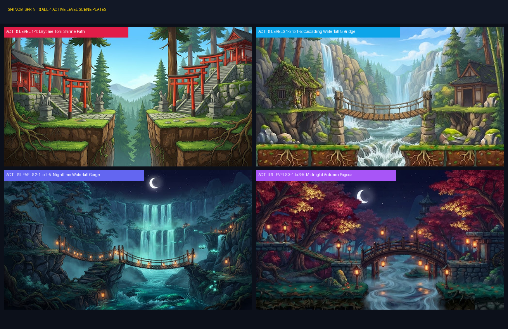
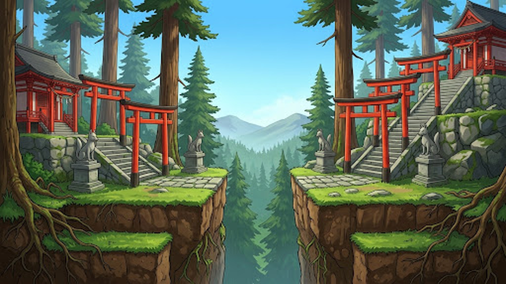
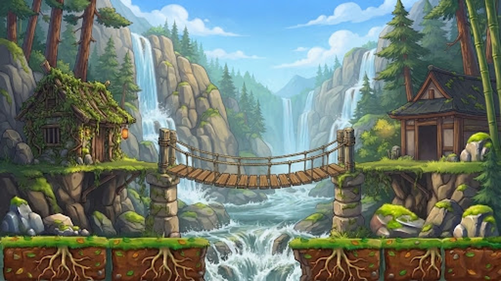
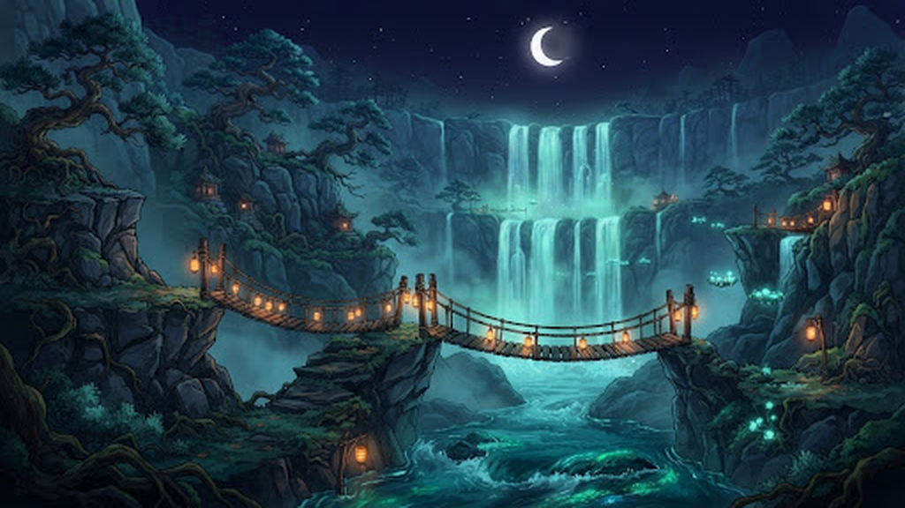
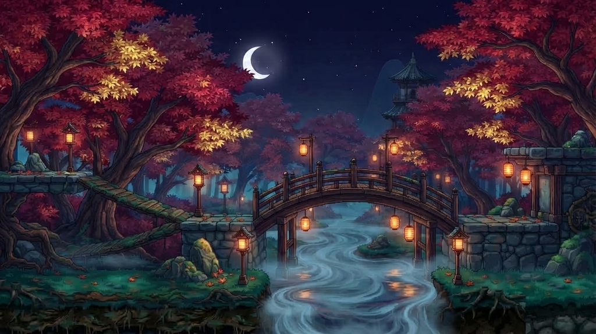
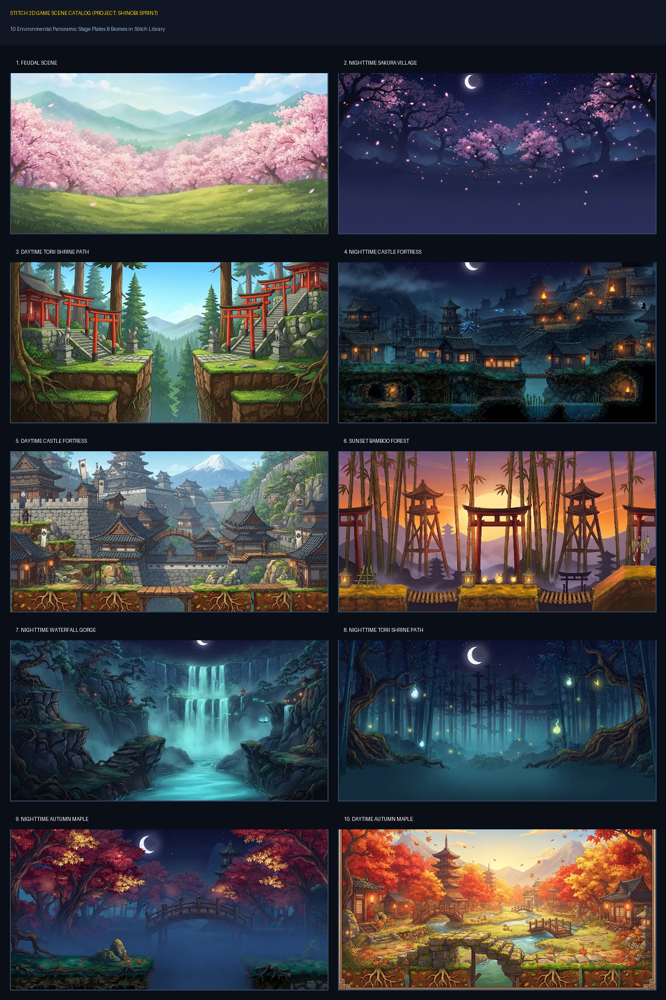

Complete visual catalog of all 4 active painted stage plates powering all 15 campaign levels across Flutter Web and Mobile Preview.


Sunlit sacred mountain ridge with sequential vermilion Torii gates, guardian kitsune stone statues, and a dramatic center mountain chasm leap leading up grand stone stairs to the mountain temple pavilion.

Rushing alpine waterfalls plunge into a rocky river canyon. Connects a mossy forest cottage on the left cliff to a mountain teahouse on the right via a suspended timber arch bridge.

Bioluminescent cascades plunging through a moonlit mountain canyon. Features dual suspended timber rope bridges with warm glowing amber lanterns, a center mossy stone pier, and upper lookout cliffs.

Moonlit midnight ambiance beneath falling scarlet momiji (maple) leaves. Glowing paper chochin lanterns illuminate a masterwork arched pagoda bridge spanning mist-shrouded river waters.
Discovered in Stitch Project: Shinobi Sprint (12274354107792210135)
